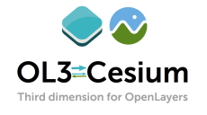

OL3-Cesium
3D for OpenLayers

Why, what, how?
Handle low level complexity and provide helpers
Federate efforts in one place
Easy to learn for OpenLayers users
Created in cooperation with KlokanTech and Camptocamp
Monthly releases
Adding 3D to your map
var ol3d = new olcs.OLCesium({map: map, target: id});
ol3d.setEnabled(true);
- A Cesium globe is created
- Layers and view are synchronized
Synchronized views
3D map with terrain
var ol3d = new olcs.OLCesium({map: map});
var scene = ol3d.getCesiumScene();
var terrainProvider = new Cesium.CesiumTerrainProvider({
url: '//cesiumjs.org/stk-terrain/tilesets/world/tiles'
});
scene.terrainProvider = terrainProvider;
scene.globe.depthTestAgainstTerrain = true;
ol3d.setEnabled(true);
- Raster layers are clamped to ground
- z-coordinate of vector layers is used with an offset
Real life example
- Swiss projection
- Clustering
- Points of Interest picking
- Terrain
- 3D features
- Dev version / older version
Heterogeneous projections
- Cesium only supports EPSG:4326 and EPSG:3857
- Vectors reprojected automatically
- Rasters handled by application
Vector clustering

- 30'000 points instead of reprojected rasters
- Pregenerated using a custom OpenLayers3 tool
- Picking: id, children and resolution per feature
- Data only sent once to the GPU, decimation in the shader
3D geometries

- Absolute positioning (x, y, z) for all geometries
- ...but incompatible with terrain LOD
- Dynamic positioning (altitudeMode = clampToTerrain)
- ...only points supported, polygon and lines are WIP
Streaming buildings and vectors
- 2.5D extruded polygons of a single "tile" POC
- TODO:
- tiling
- loading/unloading strategy
- Levels Of Details
- 3D models
Other ideas for future
- Ecmascript 6
- Webgl point based primitive
- Client side raster reprojection
- ...